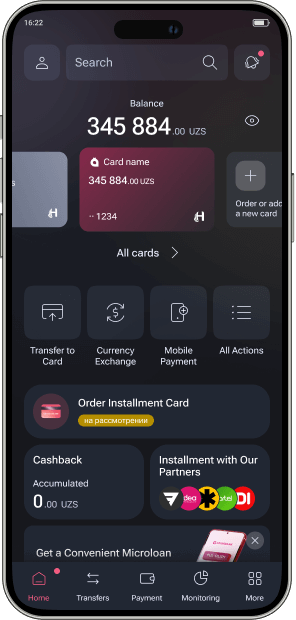

Project Case Study: Development of a Design System
Overview
Project: Development of a Design System
Role: Senior Product Designer
Duration: Ongoing (Over 1 year)
Challenge
Upon joining the team, the application suffered from significant inconsistencies both visually and technically. There were fragmented, unsystematized, and duplicate components in Figma. A majority of the layouts lacked the use of proper components. It became clear that a comprehensive design system was essential.
- Establish a unified design system to ensure consistency across all platforms.
- Systematize color palettes using color tokens and variables in Figma.
- Develop components utilizing auto-layout, color tokens, spacing variables, and typographic styles.
- Create guidelines, a backlog of tasks for development, and a design checklist.
- Implement atomic design principles, starting with the most frequent elements and expanding to cover all new flows.
Objectives
Process
-
Initiation and Systematization:
- Analyzed existing design inconsistencies.
- Systematized color palettes using color tokens and variables, enabling flexible dark mode adjustments and reducing workload.
- Developed components that utilized auto-layout, color tokens, sizing & spacing variables, and typographic styles, ensuring consistency and flexibility across iOS and Android platforms.
-
Documentation and Guidelines:
- Collaborated with the team to draft guidelines and standards for the design system.
- Created a backlog of tasks for the design system’s development and maintenance.
- Developed a comprehensive design checklist to ensure adherence to the new system.
-
Component Development:
- Followed atomic design principles, starting with the most frequently used elements.
- Expanded the component library to include elements for new flows.
- Ensured the design system components covered all new flows and gradually replaced elements in existing flows that hadn't yet undergone redesign.
-
Integration and Implementation:
- Achieved full integration of the design system within six months.
- All new flows were developed entirely using design system components, significantly enhancing consistency and productivity.

Impact
-
Component Adoption Rate:
Component usage increased from a few basic elements to 90% of workflows using standardized components.
-
Efficiency:
Development speed improved, reducing the average time to design and develop new features from 8 weeks to 5 weeks.
-
Productivity:
UI error rates decreased dramatically, reflecting improved usability and fewer design flaws.
-
Onboarding Time for New Designers:
Reduced from 6 weeks to 3 weeks, thanks to clear documentation and standardized design patterns.
-
Bug Reduction Rate:
Design-related bugs decreased by 40%, indicating a significant improvement in the quality and reliability of the design implementations.
Case Highlight:
Automated Color Token Management
-
Problem:
The evolving design system required frequent updates to the color scheme. Developers had to manually search for changes and update colors, leading to inefficiencies.
-
Solution:
- Proposed and developed a custom Figma plugin to export a table of color tokens in a convenient format with navigation.
- Eliminated the manual task of updating colors in the table, simplifying updates for designers and developers.
- Ensured timely and straightforward updates to the color tokens.
Conclusion
The implementation of the design system has significantly enhanced design consistency, productivity, and overall efficiency. The systematic approach and integration of automated tools have set a new standard for the team, ensuring seamless and timely updates and reducing manual workload.
